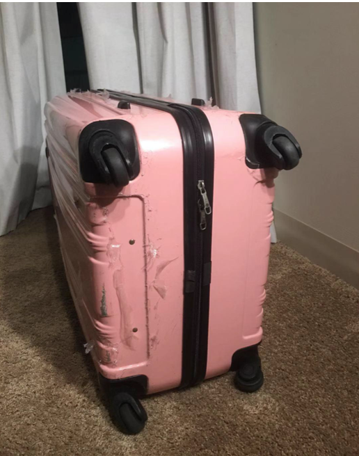
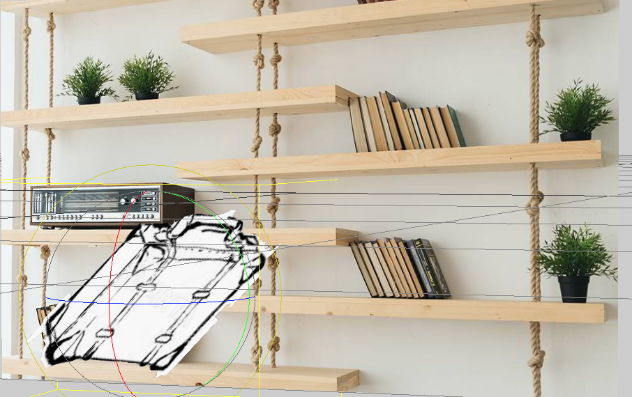
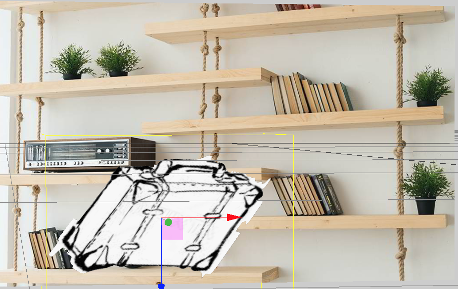

artvive


Suitcase look like a hard covered book back in 1854. Louis Vuitton designs flat trunk that could be stacked during steamship travel due to its top flat shape. They were built with frames of wood and steel, with leather, wicker or rubberized cloth to cover it.In Verne's day, proper travel required a hefty trunk built of wood, leather, and often a heavy iron base. The best trunks were waterproofed with canvas or tree sap,during the oversea traveling constraintsWithout this protection, a suitcase in the hold of a heaving, leaky ship would probably have been wet within a few hours, and crushed by sliding trunks within a few more.
In artvive the suitcase look like a book in the shelf.
